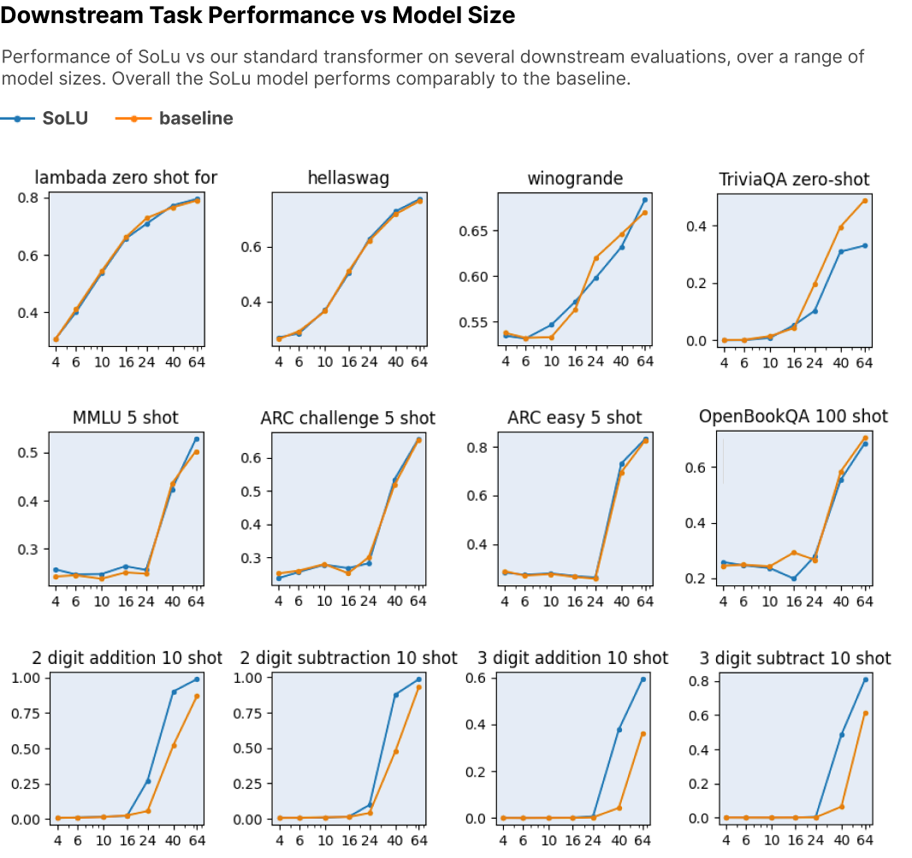
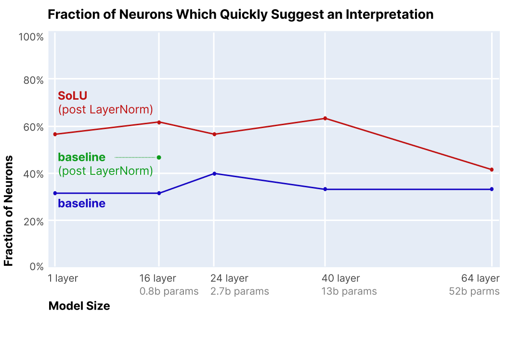
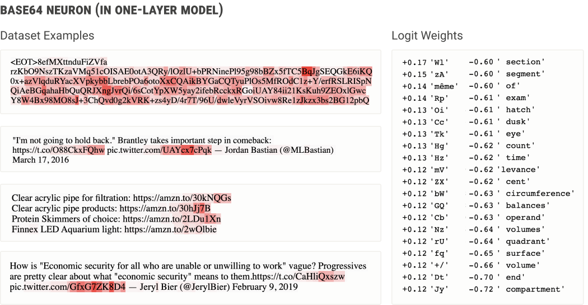
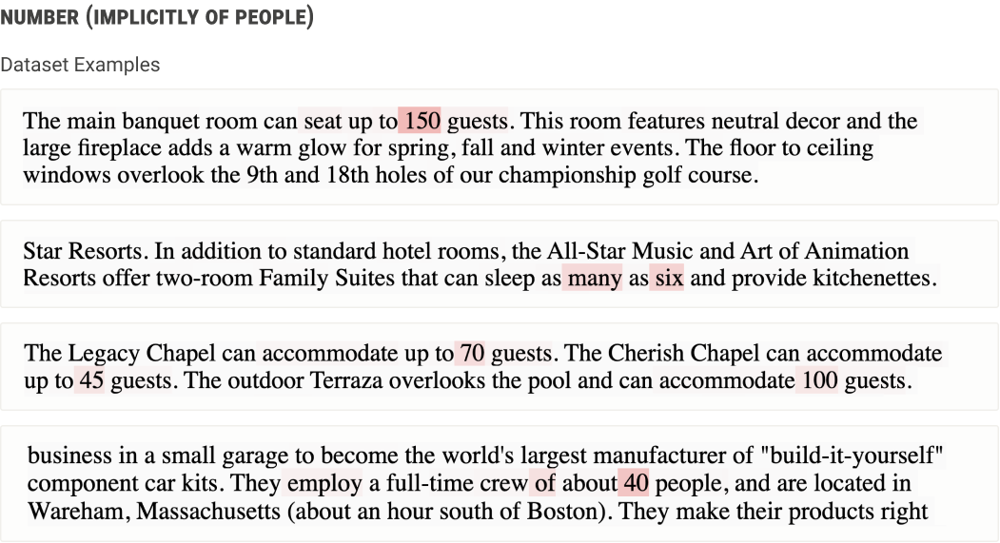

<!DOCTYPE html>


  <html lang="en">
    

    <head>
      <meta charset="utf-8" />
        
      <meta
        name="viewport"
        content="width=device-width, initial-scale=1, maximum-scale=1"
      />
      <title>Softmax Linear Units Softmax |  小熊的小站</title>
  <meta name="generator" content="hexo-theme-ayer">
      
      <link rel="shortcut icon" href="/favicon.ico" />
       
<link rel="stylesheet" href="/dist/main.css">

      
<link rel="stylesheet" href="/css/fonts/remixicon.css">

      
<link rel="stylesheet" href="/css/custom.css">
 
      <script src="https://cdn.staticfile.org/pace/1.2.4/pace.min.js"></script>
       

<script type="text/javascript">
(function(i,s,o,g,r,a,m){i['GoogleAnalyticsObject']=r;i[r]=i[r]||function(){
(i[r].q=i[r].q||[]).push(arguments)},i[r].l=1*new Date();a=s.createElement(o),
m=s.getElementsByTagName(o)[0];a.async=1;a.src=g;m.parentNode.insertBefore(a,m)
})(window,document,'script','//www.google-analytics.com/analytics.js','ga');

ga('create', 'UA-228563528-1', 'auto');
ga('send', 'pageview');

</script>


 
<script>
var _hmt = _hmt || [];
(function() {
	var hm = document.createElement("script");
	hm.src = "https://hm.baidu.com/hm.js?71ee62302f36ca8f840077a641705255";
	var s = document.getElementsByTagName("script")[0]; 
	s.parentNode.insertBefore(hm, s);
})();
</script>


      <link
        rel="stylesheet"
        href="https://cdn.jsdelivr.net/npm/@sweetalert2/theme-bulma@5.0.1/bulma.min.css"
      />
      <script src="https://cdn.jsdelivr.net/npm/sweetalert2@11.0.19/dist/sweetalert2.min.js"></script>

      <!-- mermaid -->
      
      <style>
        .swal2-styled.swal2-confirm {
          font-size: 1.6rem;
        }
      </style>
    </head>
  </html>
</html>


<body>
  <div id="app">
    
      
    <main class="content on">
      <section class="outer">
  <article
  id="post-20240605"
  class="article article-type-post"
  itemscope
  itemprop="blogPost"
  data-scroll-reveal
>
  <div class="article-inner">
    
    <header class="article-header">
       
<h1 class="article-title sea-center" style="border-left:0" itemprop="name">
  Softmax Linear Units Softmax
</h1>
 

      
    </header>
     
    <div class="article-meta">
      <a href="/2024/20240605/" class="article-date">
  <time datetime="2024-06-05T07:07:18.000Z" itemprop="datePublished">2024-06-05</time>
</a>   
<div class="word_count">
    <span class="post-time">
        <span class="post-meta-item-icon">
            <i class="ri-quill-pen-line"></i>
            <span class="post-meta-item-text"> Word count:</span>
            <span class="post-count">2.4k</span>
        </span>
    </span>

    <span class="post-time">
        &nbsp; | &nbsp;
        <span class="post-meta-item-icon">
            <i class="ri-book-open-line"></i>
            <span class="post-meta-item-text"> Reading time≈</span>
            <span class="post-count">8 min</span>
        </span>
    </span>
</div>
 
    </div>
      
    <div class="tocbot"></div>


  
    <div class="article-entry" itemprop="articleBody">
       
  <link rel="stylesheet" type="text&#x2F;css" href="https://cdn.jsdelivr.net/npm/hexo-tag-hint@0.3.1/dist/hexo-tag-hint.min.css"><p>出自Anthropic’s transformer circuits thread</p>
<p><a target="_blank" rel="noopener" href="https://transformer-circuits.pub/2022/solu/index.html">Softmax Linear Units Softmax</a></p>
<p>在本文中，我们报告了一种架构变化，该变化似乎大大增加了看起来“可解释”的 MLP 神经元的比例（即响应输入的可表达属性），而对 ML 性能的影响很小甚至没有。具体来说，我们用 softmax 线性单元（我们称之为 SoLU）替换激活函数，并表明这显着增加了 MLP 层中神经元的比例，这些神经元在快速调查中似乎对应于人类容易理解的概念、短语或类别，通过随机和盲法实验测量。然后，我们研究 SoLU 模型，并使用它们来获得有关 Transformer 中信息如何处理的一些新见解。然而，我们也发现了一些证据，证明叠加假设是正确的，并且天下没有免费的午餐：SoLU 可能通过“隐藏”其他特征来使某些特征更容易解释，从而使它们更加难以解释。尽管如此，SoLU 似乎仍然是一个净胜利，因为实际上它大大增加了我们能够理解的神经元的比例。</p>
<span id="more"></span>

<h2 id="SOLU的提出"><a href="#SOLU的提出" class="headerlink" title="SOLU的提出"></a>SOLU的提出</h2><p>GeLU是一种现代transformer常用的激活函数</p>
<p>$\mathrm{GELU}(x)=xP(X\leq x)=x\Phi(x)=x\cdot\frac{1}{2}\left[1+\mathrm{erf}(x/\sqrt{2})\right]$</p>
<p>一种近似版本：</p>
<p>$0.5x\Big(1+\tanh\Big[\sqrt{2/\pi}\Big(x+0.044715x^{3}\Big)\Big]\Big)$ 或$x\sigma(1.702x)$</p>
<p>于是Anthropic研究者们考虑了将sigmoid换为softmax。</p>
<p>将此激活函数称为“softmax 线性单元”或 SoLU：</p>
<p>SoLU(x)=x*softmax(x)</p>
<p>当 SoLU 应用于大值和小值的向量时，大值将抑制较小值：</p>
<p>SoLU(4,1,4,1)=（1.9051, 0.0237, 1.9051, 0.0237）≈(2, 0, 2, 0)</p>
<p>也许更重要的是，保留了大的基础对齐向量，而跨多个维度分布的特征将被抑制到较小的量级：</p>
<p>SoLU(4,0,0,0) ≈ (4,0,0,0)</p>
<p>SoLU(1,1,1,1) ≈ ($\frac{1}{4}$, $\frac{1}{4}$, $\frac{1}{4}$, $\frac{1}{4}$)</p>
<p>初步实验发现，简单地使用 SoLU 激活函数似乎可以使神经元更容易解释，但会付出很大的性能代价。一般来说，没有任何其他改变的 SoLU 模型的性能相当于比实际尺寸小 30-50% 的模型，较大的模型受到的影响更大。  如果叠加假设成立，这正是我们所期望看到的——我们可以减少多语义性，但这样做会损害网络的机器学习性能。</p>
<p>然而，我们凭经验发现，通过在 SoLU 之后应用额外的 LayerNorm（类似于 </p>
<p>[25]</p>
<p> ），可以修复这种性能损失，同时保留可解释性增益。这极大地提高了 ML 性能，因此对于我们的大多数实验，我们实际应用的函数是 2 但请注意，我们尝试解释的激活是在额外层规范之前，而不是之后：<br>$$<br>f(x)=LN(SoLU(x))=LN(x*softmax(x))<br>$$</p>
<h2 id="实验"><a href="#实验" class="headerlink" title="实验"></a>实验</h2><p><strong>“请注意，以任意性能代价来构建提高可解释性的架构既微不足道又无趣。”</strong></p>
<p></p>
<p> 如图所示，SoLU 大致相当于所有模型大小的基线，始终落在模型大小的 1.05 倍和 0.95 倍乘数之间（与大多数情况下相比，大致相当于 ±0.01 纳特的损失变化）总共损失 1.6-3 纳特）。  尽管所有差异都很小并且更有可能是随机噪声（在 50B 模型上，SoLU 相当于将模型大小增加 1.01 倍），但在大模型尺寸下，SoLU 的性能可能会比基线稍好一些。 ）。</p>
<p></p>
<p>上图为下游任务的性能。由于SoLU 使用基线的一系列超参数，并且 SoLU 的最佳超参数可能与基线模型的最佳超参数不同。但表明 SoLU 至少与基线一样好。</p>
<p>总的来说，我们得出的结论是，与标准 Transformer 相比，带有 LayerNorm 的 SoLU 似乎实现了有竞争力的 ML 和训练性能。</p>
<h2 id="可解释性"><a href="#可解释性" class="headerlink" title="可解释性"></a>可解释性</h2><h3 id="定量结果"><a href="#定量结果" class="headerlink" title="定量结果"></a>定量结果</h3><p>我们关于哪些部分的神经元可以初步解释的实验结果如下图 4所示。对于从 1 层到 40 层的模型，SoLU 模型的神经元比基线的神经元更具可解释性，增加了大约 25 个绝对百分点，从约 35% 可解释到约 60% 可解释。  这将可解释神经元的比例增加了 1.7 倍。  尽管效果大小适中，但样本量、一致的间隙和一致的可解释神经元绝对率表明 SoLU 模型具有真实且持久的效果。</p>
<p></p>
<p> 蓝线显示了标记为初步表明基线变换器中模型大小范围从 1 到 64 层的解释的神经元分数。  红线显示了标记为初步暗示 SoLU 转换器中的解释的神经元部分。  绿点显示了标记为初步表明 16 层模型中带有额外层范数但不带有 SoLU 的解释的神经元的分数。  总体而言，在 1 层到 40 层的模型中，SoLU 将可解释神经元的比例增加了约 25%，而在 64 层模型中，增益要小得多。</p>
<p>我们不知道为什么 64L 模型从 SoLU 中受益较少，但一种可能的理论是，随着模型变得更大，它们的神经元代表更复杂的概念并且变得更难以理解。这表明神经元仍然是可解释的，但不再“容易解释”。</p>
<h3 id="定性"><a href="#定性" class="headerlink" title="定性"></a>定性</h3><h4 id="一层模型神经元"><a href="#一层模型神经元" class="headerlink" title="一层模型神经元"></a>一层模型神经元</h4><p></p>
<p>1 层 SoLU 模型中的神经元似乎对 Base64 编码的文本进行触发（左）。神经元对 logits 的扩展权重（右）增加了混合情况下很少出现在单词中的一堆标记的概率，同时降低了代表英语单词的多个标记的概率，这一事实证实了这一点。可以将其理解为一个可解释的规则，即在 Base64 文本上，下一个标记更有可能也是 Base64。</p>
<h4 id="较大模型中的前面的神经元（”DE-TOKENIZATION”）"><a href="#较大模型中的前面的神经元（”DE-TOKENIZATION”）" class="headerlink" title="较大模型中的前面的神经元（”DE-TOKENIZATION”）"></a>较大模型中的前面的神经元（”DE-TOKENIZATION”）</h4><p>接下来我们将探索转向更大的型号——我们剩下的示例将来自 16L、24L、40L 和 64L 型号的混合。  我们最有趣的发现之一是，大型网络的早期、中期和晚期层的神经元往往扮演着非常不同类型的角色，就像已知的卷积网络视觉模型不同深度的特征是不同的一样。  我们将在各自的部分中讨论每个神经元，从前面层的神经元开始。</p>
<p>前面层神经元似乎经常参与将标记的“人工”结构映射到更自然、语义上有意义的表示。</p>
<ul>
<li><strong>神经元对被分成多个标记的特定单词做出反应：</strong>“银行”、“措辞”、“胆固醇”、“自由主义者”、“平民”、“上海”、“尽管如此”……</li>
<li><strong>神经元对名人的名字做出反应：</strong>“马丁·路德·金”、“唐纳德·特朗普”、“林登·约翰逊”、“乔治·奥威尔”、“欧内斯特·海明威”、“穆罕默德·阿里”、“奥普拉·温弗瑞”……（参见 [17] ）</li>
<li><strong>神经元对其他名词做出反应：</strong>“人权观察”、“国际货币基金组织”、“马修飓风”、“皇家马德里”……</li>
<li><strong>神经元对复合词做出反应：</strong>“读书俱乐部”、“社会保障”、“计算机视觉”、“有组织犯罪”、“生日聚会”、“心脏病发作”……</li>
<li><strong>神经元响应 LaTeX“\”命令：</strong>“\left”、“\frac{”、“\begin”…</li>
</ul>
<h4 id="较大模型中的后层神经元（“RE-TOKENIZATION”）"><a href="#较大模型中的后层神经元（“RE-TOKENIZATION”）" class="headerlink" title="较大模型中的后层神经元（“RE-TOKENIZATION”）"></a>较大模型中的后层神经元（“RE-TOKENIZATION”）</h4><p>后期层神经元（靠近网络输出的神经元）通常会做与早期层神经元相反的事情：它们介导单词或上下文标记返回文字标记的转换。例如，最后一层中的一个神经元会触发标记“st”，同时增加后续标记是“rag”的可能性；本质上，这是一种将单词“stragglers”的表示形式逐个转换或指示为其组成标记以进行输出的方法。类似地，“nappies”输出神经元在标记“n”上触发，并增加标记“app”帮助写入“nappies”的概率。这些神经元本质上模拟了一个额外的输出词汇项，该词汇项仅在前面的标记满足某些条件时才可用。</p>
<p></p>
<h4 id="较大模型中的中间层神经元"><a href="#较大模型中的中间层神经元" class="headerlink" title="较大模型中的中间层神经元"></a>较大模型中的中间层神经元</h4><p>中间层的神经元通常代表更复杂、抽象的想法。例如，当且仅当数字涉及多个人时，有一个神经元似乎代表数字：</p>
<p></p>
<p>在这些层中可以发现各种各样有趣的神经元。我们观察到的一些常见类别包括：</p>
<ul>
<li>对特定类型的描述性从句激发的神经元：对描述声音的从句激发的神经元、对描述服装的从句激发的神经元、对音乐描述性从句激发的神经元（例如“C 大调”）、对从句激发的神经元描述写在物体上的文字，…</li>
<li>对话语标记做出反应的神经元：对强调某件事的重要性的标记做出反应的神经元（例如“令人惊奇的是”），对对冲做出反应的神经元（例如“在我看来……”），……</li>
<li>消除对标记的特殊解释的歧义的神经元：当用作成绩时对 A/B/C/D 做出响应的神经元，对日期的“日”部分做出响应的神经元，对数字进行响应的神经元是菜谱中的一个数量，一个响应字符串中 C 风格格式说明符（例如“%s”或“%d”）的神经元，……</li>
</ul>
<p>但是有很多神经元很难归入这些类别，例如似乎有助于解析 ASCII 表列的神经元。</p>
 
      <!-- reward -->
      
    </div>
    

    <!-- copyright -->
    
    <footer class="article-footer">
       
<div class="share-btn">
      <span class="share-sns share-outer">
        <i class="ri-share-forward-line"></i>
        分享
      </span>
      <div class="share-wrap">
        <i class="arrow"></i>
        <div class="share-icons">
          
          <a class="weibo share-sns" href="javascript:;" data-type="weibo">
            <i class="ri-weibo-fill"></i>
          </a>
          <a class="weixin share-sns wxFab" href="javascript:;" data-type="weixin">
            <i class="ri-wechat-fill"></i>
          </a>
          <a class="qq share-sns" href="javascript:;" data-type="qq">
            <i class="ri-qq-fill"></i>
          </a>
          <a class="douban share-sns" href="javascript:;" data-type="douban">
            <i class="ri-douban-line"></i>
          </a>
          <!-- <a class="qzone share-sns" href="javascript:;" data-type="qzone">
            <i class="icon icon-qzone"></i>
          </a> -->
          
          <a class="facebook share-sns" href="javascript:;" data-type="facebook">
            <i class="ri-facebook-circle-fill"></i>
          </a>
          <a class="twitter share-sns" href="javascript:;" data-type="twitter">
            <i class="ri-twitter-fill"></i>
          </a>
          <a class="google share-sns" href="javascript:;" data-type="google">
            <i class="ri-google-fill"></i>
          </a>
        </div>
      </div>
</div>

<div class="wx-share-modal">
    <a class="modal-close" href="javascript:;"><i class="ri-close-circle-line"></i></a>
    <p>扫一扫，分享到微信</p>
    <div class="wx-qrcode">
      
    </div>
</div>

<div id="share-mask"></div>  
  <ul class="article-tag-list" itemprop="keywords"><li class="article-tag-list-item"><a class="article-tag-list-link" href="/tags/%E5%8F%AF%E8%A7%A3%E9%87%8A%E6%80%A7/" rel="tag">可解释性</a></li><li class="article-tag-list-item"><a class="article-tag-list-link" href="/tags/%E6%B7%B1%E5%BA%A6%E5%AD%A6%E4%B9%A0/" rel="tag">深度学习</a></li></ul>

    </footer>
  </div>

   
  <nav class="article-nav">
    
    
      <a href="/2024/20240516/" class="article-nav-link">
        <strong class="article-nav-caption">下一篇</strong>
        <div class="article-nav-title">MambaOut-Do We Really Need Mamba for Vision?</div>
      </a>
    
  </nav>

   
 
   
     
</article>

</section>
      <footer class="footer">
  <div class="outer">
    <ul>
      <li>
        Copyrights &copy;
        2019-2024
        <i class="ri-heart-fill heart_icon"></i> LJX
      </li>
    </ul>
    <ul>
      <li>
        
        
        
        Powered by <a href="https://hexo.io" target="_blank">Hexo</a>
        <span class="division">|</span>
        Theme - <a href="https://github.com/Shen-Yu/hexo-theme-ayer" target="_blank">Ayer</a>
        
      </li>
    </ul>
    <ul>
      <li>
        
        
        <span>
  <span><i class="ri-user-3-fill"></i>Visitors:<span id="busuanzi_value_site_uv"></span></span>
  <span class="division">|</span>
  <span><i class="ri-eye-fill"></i>Views:<span id="busuanzi_value_page_pv"></span></span>
</span>
        
      </li>
    </ul>
    <ul>
      
    </ul>
    <ul>
      
    </ul>
    <ul>
      <li>
        <!-- cnzz统计 -->
        
        <script type="text/javascript" src='https://s9.cnzz.com/z_stat.php?id=1278069914&amp;web_id=1278069914'></script>
        
      </li>
    </ul>
  </div>
</footer>    
    </main>
    <div class="float_btns">
      <div class="totop" id="totop">
  <i class="ri-arrow-up-line"></i>
</div>

<div class="todark" id="todark">
  <i class="ri-moon-line"></i>
</div>

    </div>
    <aside class="sidebar on">
      <button class="navbar-toggle"></button>
<nav class="navbar">
  
  <div class="logo">
    <a href="/"></a>
  </div>
  
  <ul class="nav nav-main">
    
    <li class="nav-item">
      <a class="nav-item-link" href="/">主页</a>
    </li>
    
    <li class="nav-item">
      <a class="nav-item-link" href="/archives">目录</a>
    </li>
    
    <li class="nav-item">
      <a class="nav-item-link" href="/about">关于本站</a>
    </li>
    
    <li class="nav-item">
      <a class="nav-item-link" href="/about_me">关于我</a>
    </li>
    
    <li class="nav-item">
      <a class="nav-item-link" href="/photos">人间烟火</a>
    </li>
    
    <li class="nav-item">
      <a class="nav-item-link" target="_blank" rel="noopener" href="https://act18l.github.io/">欧拉计划</a>
    </li>
    
  </ul>
</nav>
<nav class="navbar navbar-bottom">
  <ul class="nav">
    <li class="nav-item">
      
      <a class="nav-item-link nav-item-search"  title="Search">
        <i class="ri-search-line"></i>
      </a>
      
      
    </li>
  </ul>
</nav>
<div class="search-form-wrap">
  <div class="local-search local-search-plugin">
  <input type="search" id="local-search-input" class="local-search-input" placeholder="Search...">
  <div id="local-search-result" class="local-search-result"></div>
</div>
</div>
    </aside>
    <div id="mask"></div>

<!-- #reward -->
<div id="reward">
  <span class="close"><i class="ri-close-line"></i></span>
  <p class="reward-p"><i class="ri-cup-line"></i>请我喝杯咖啡吧~</p>
  <div class="reward-box">
    
    <div class="reward-item">
      
      <span class="reward-type">支付宝</span>
    </div>
    
    
    <div class="reward-item">
      
      <span class="reward-type">微信</span>
    </div>
    
  </div>
</div>
    
<script src="/js/jquery-3.6.0.min.js"></script>
 
<script src="/js/lazyload.min.js"></script>

<!-- Tocbot -->
 
<script src="/js/tocbot.min.js"></script>

<script>
  tocbot.init({
    tocSelector: ".tocbot",
    contentSelector: ".article-entry",
    headingSelector: "h1, h2, h3, h4, h5, h6",
    hasInnerContainers: true,
    scrollSmooth: true,
    scrollContainer: "main",
    positionFixedSelector: ".tocbot",
    positionFixedClass: "is-position-fixed",
    fixedSidebarOffset: "auto",
  });
</script>

<script src="https://cdn.staticfile.org/jquery-modal/0.9.2/jquery.modal.min.js"></script>
<link
  rel="stylesheet"
  href="https://cdn.staticfile.org/jquery-modal/0.9.2/jquery.modal.min.css"
/>
<script src="https://cdn.staticfile.org/justifiedGallery/3.8.1/js/jquery.justifiedGallery.min.js"></script>

<script src="/dist/main.js"></script>

<!-- ImageViewer -->
 <!-- Root element of PhotoSwipe. Must have class pswp. -->
<div class="pswp" tabindex="-1" role="dialog" aria-hidden="true">

    <!-- Background of PhotoSwipe. 
         It's a separate element as animating opacity is faster than rgba(). -->
    <div class="pswp__bg"></div>

    <!-- Slides wrapper with overflow:hidden. -->
    <div class="pswp__scroll-wrap">

        <!-- Container that holds slides. 
            PhotoSwipe keeps only 3 of them in the DOM to save memory.
            Don't modify these 3 pswp__item elements, data is added later on. -->
        <div class="pswp__container">
            <div class="pswp__item"></div>
            <div class="pswp__item"></div>
            <div class="pswp__item"></div>
        </div>

        <!-- Default (PhotoSwipeUI_Default) interface on top of sliding area. Can be changed. -->
        <div class="pswp__ui pswp__ui--hidden">

            <div class="pswp__top-bar">

                <!--  Controls are self-explanatory. Order can be changed. -->

                <div class="pswp__counter"></div>

                <button class="pswp__button pswp__button--close" title="Close (Esc)"></button>

                <button class="pswp__button pswp__button--share" style="display:none" title="Share"></button>

                <button class="pswp__button pswp__button--fs" title="Toggle fullscreen"></button>

                <button class="pswp__button pswp__button--zoom" title="Zoom in/out"></button>

                <!-- Preloader demo http://codepen.io/dimsemenov/pen/yyBWoR -->
                <!-- element will get class pswp__preloader--active when preloader is running -->
                <div class="pswp__preloader">
                    <div class="pswp__preloader__icn">
                        <div class="pswp__preloader__cut">
                            <div class="pswp__preloader__donut"></div>
                        </div>
                    </div>
                </div>
            </div>

            <div class="pswp__share-modal pswp__share-modal--hidden pswp__single-tap">
                <div class="pswp__share-tooltip"></div>
            </div>

            <button class="pswp__button pswp__button--arrow--left" title="Previous (arrow left)">
            </button>

            <button class="pswp__button pswp__button--arrow--right" title="Next (arrow right)">
            </button>

            <div class="pswp__caption">
                <div class="pswp__caption__center"></div>
            </div>

        </div>

    </div>

</div>

<link rel="stylesheet" href="https://cdn.staticfile.org/photoswipe/4.1.3/photoswipe.min.css">
<link rel="stylesheet" href="https://cdn.staticfile.org/photoswipe/4.1.3/default-skin/default-skin.min.css">
<script src="https://cdn.staticfile.org/photoswipe/4.1.3/photoswipe.min.js"></script>
<script src="https://cdn.staticfile.org/photoswipe/4.1.3/photoswipe-ui-default.min.js"></script>

<script>
    function viewer_init() {
        let pswpElement = document.querySelectorAll('.pswp')[0];
        let $imgArr = document.querySelectorAll(('.article-entry img:not(.reward-img)'))

        $imgArr.forEach(($em, i) => {
            $em.onclick = () => {
                // slider展开状态
                // todo: 这样不好，后面改成状态
                if (document.querySelector('.left-col.show')) return
                let items = []
                $imgArr.forEach(($em2, i2) => {
                    let img = $em2.getAttribute('data-idx', i2)
                    let src = $em2.getAttribute('data-target') || $em2.getAttribute('src')
                    let title = $em2.getAttribute('alt')
                    // 获得原图尺寸
                    const image = new Image()
                    image.src = src
                    items.push({
                        src: src,
                        w: image.width || $em2.width,
                        h: image.height || $em2.height,
                        title: title
                    })
                })
                var gallery = new PhotoSwipe(pswpElement, PhotoSwipeUI_Default, items, {
                    index: parseInt(i)
                });
                gallery.init()
            }
        })
    }
    viewer_init()
</script> 
<!-- MathJax -->
 <script type="text/x-mathjax-config">
  MathJax.Hub.Config({
      tex2jax: {
          inlineMath: [ ['$','$'], ["\\(","\\)"]  ],
          processEscapes: true,
          skipTags: ['script', 'noscript', 'style', 'textarea', 'pre', 'code']
      }
  });

  MathJax.Hub.Queue(function() {
      var all = MathJax.Hub.getAllJax(), i;
      for(i=0; i < all.length; i += 1) {
          all[i].SourceElement().parentNode.className += ' has-jax';
      }
  });
</script>

<script src="https://cdn.staticfile.org/mathjax/2.7.7/MathJax.js"></script>
<script src="https://cdn.staticfile.org/mathjax/2.7.7/config/TeX-AMS-MML_HTMLorMML-full.js"></script>
<script>
  var ayerConfig = {
    mathjax: true,
  };
</script>

<!-- Katex -->
 
    
        <link rel="stylesheet" href="https://cdn.staticfile.org/KaTeX/0.15.1/katex.min.css">
        <script src="https://cdn.staticfile.org/KaTeX/0.15.1/katex.min.js"></script>
        <script src="https://cdn.staticfile.org/KaTeX/0.15.1/contrib/auto-render.min.js"></script>
        
    
 
<!-- busuanzi  -->
 
<script src="/js/busuanzi-2.3.pure.min.js"></script>
 
<!-- ClickLove -->

<!-- ClickBoom1 -->

<!-- ClickBoom2 -->

<!-- CodeCopy -->
 
<link rel="stylesheet" href="/css/clipboard.css">
 <script src="https://cdn.staticfile.org/clipboard.js/2.0.10/clipboard.min.js"></script>
<script>
  function wait(callback, seconds) {
    var timelag = null;
    timelag = window.setTimeout(callback, seconds);
  }
  !function (e, t, a) {
    var initCopyCode = function(){
      var copyHtml = '';
      copyHtml += '<button class="btn-copy" data-clipboard-snippet="">';
      copyHtml += '<i class="ri-file-copy-2-line"></i><span>COPY</span>';
      copyHtml += '</button>';
      $(".highlight .code pre").before(copyHtml);
      $(".article pre code").before(copyHtml);
      var clipboard = new ClipboardJS('.btn-copy', {
        target: function(trigger) {
          return trigger.nextElementSibling;
        }
      });
      clipboard.on('success', function(e) {
        let $btn = $(e.trigger);
        $btn.addClass('copied');
        let $icon = $($btn.find('i'));
        $icon.removeClass('ri-file-copy-2-line');
        $icon.addClass('ri-checkbox-circle-line');
        let $span = $($btn.find('span'));
        $span[0].innerText = 'COPIED';
        
        wait(function () { // 等待两秒钟后恢复
          $icon.removeClass('ri-checkbox-circle-line');
          $icon.addClass('ri-file-copy-2-line');
          $span[0].innerText = 'COPY';
        }, 2000);
      });
      clipboard.on('error', function(e) {
        e.clearSelection();
        let $btn = $(e.trigger);
        $btn.addClass('copy-failed');
        let $icon = $($btn.find('i'));
        $icon.removeClass('ri-file-copy-2-line');
        $icon.addClass('ri-time-line');
        let $span = $($btn.find('span'));
        $span[0].innerText = 'COPY FAILED';
        
        wait(function () { // 等待两秒钟后恢复
          $icon.removeClass('ri-time-line');
          $icon.addClass('ri-file-copy-2-line');
          $span[0].innerText = 'COPY';
        }, 2000);
      });
    }
    initCopyCode();
  }(window, document);
</script>
 
<!-- CanvasBackground -->
 
<script src="/js/dz.js"></script>
 
<script>
  if (window.mermaid) {
    mermaid.initialize({ theme: "forest" });
  }
</script>


    
    

  </div>
</body>

</html>